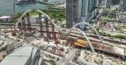
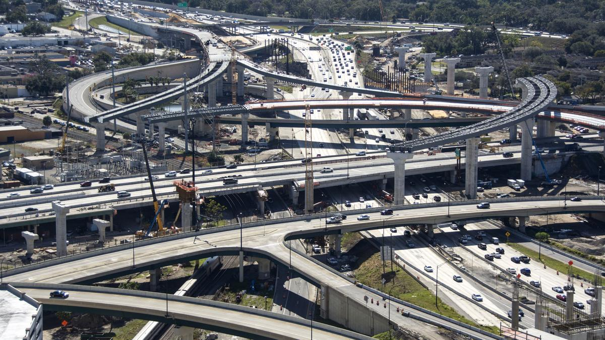
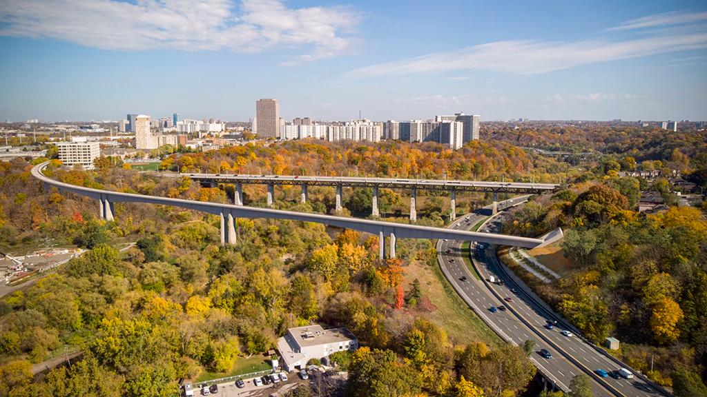
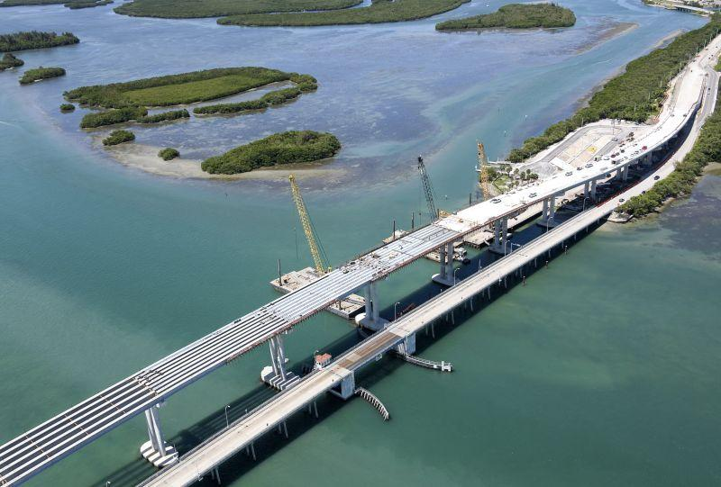
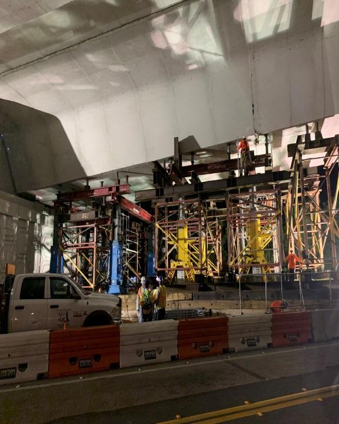
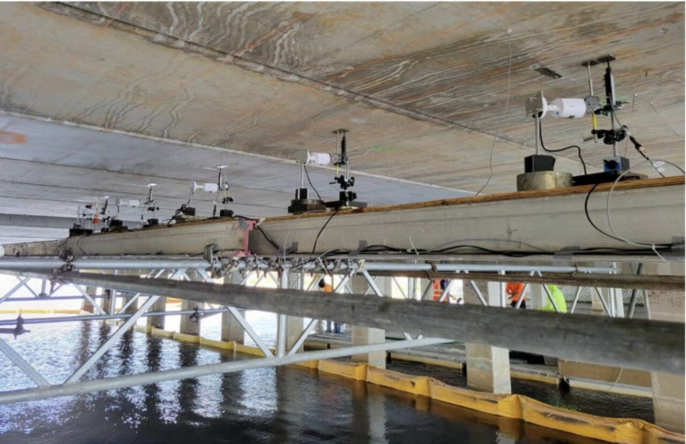
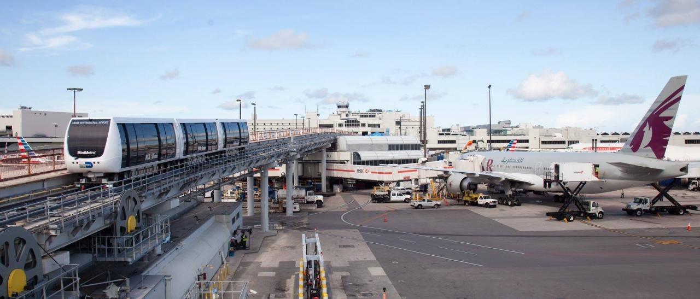

Advanced Structural Engineering
Complex bridge analysis and design across concrete, steel, segmental, and foundation systems, supported by refined modeling and code-based design judgment.
ABOUT
Jiayi Ding, PhD, PE, PMP, is a lead structural engineer and technical manager whose work spans bridge design, advanced analysis, inspection and evaluation, rehabilitation, construction support, and team leadership.
ENGINEERING PROFILE
Jiayi’s experience covers a broad range of highway and transit bridge systems, including prestressed and post-tensioned concrete, segmental construction, steel plate and box girders, deep foundations, and complex substructures. His technical work includes finite element analysis, construction-stage analysis, soil–structure interaction, vessel collision, fatigue, load rating, nonlinear behavior, and structural rehabilitation.
What distinguishes his approach is the connection between detailed analysis and engineering judgment. He focuses on understanding load paths, structural behavior, constructability, and long-term performance—then translating that understanding into clear design decisions that project teams can execute.
CORE STRENGTHS
A combination of advanced structural engineering, multidisciplinary coordination, quality oversight, and team development across complex infrastructure programs.
Complex bridge analysis and design across concrete, steel, segmental, and foundation systems, supported by refined modeling and code-based design judgment.
Inspection-informed assessment, load rating, nondestructive testing, diagnostic load testing, rehabilitation, strengthening, and retrofit strategies for existing bridges.
Leadership of structural engineers and designers through modeling, calculations, plan production, independent design checks, quality review, and construction support.
LEADERSHIP IN PRACTICE
Jiayi has served in lead and independent-check roles on major bridge programs, guiding engineers and CAD staff through analytical modeling, design calculations, detailing, plan production, and technical review. His leadership style is grounded in staying close to the engineering—setting a clear technical direction while creating structure for the team to execute efficiently.
He has led substructure and foundation design for elevated viaducts, independent design checks for post-tensioned segmental bridges, and multidisciplinary coordination involving superstructure, geotechnical, construction, and roadway teams. This combination of technical ownership and people leadership helps reduce rework, improve decision quality, and maintain consistency from analysis through final delivery.
SELECTED PROJECT EXPERIENCE
Representative projects illustrating the breadth of Jiayi’s technical work and the range of responsibilities he has taken on throughout the bridge lifecycle.







ENGINEERING PHILOSOPHY
Jiayi’s broader interest is in building engineering teams and workflows that combine technical rigor, practical judgment, and modern digital tools. The objective is not simply to produce more analysis, but to turn complex information into reliable decisions, efficient project delivery, and infrastructure that performs well over its service life.